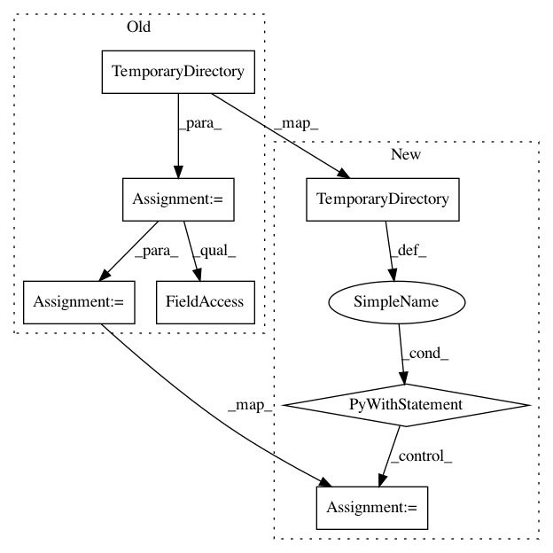

4331fd73f0864d21c366a24c0105c8bd3555189b,tests/test_networkml.py,,test_networkml_train_sos,#,78
Before Change
def test_networkml_train_sos():
tempdir = tempfile.TemporaryDirectory()
savew = os.path.join(tempdir.name, "intermediate.model")
netml = run_networkml(
["-p", "tests/", "-o", "train", "-a", "sos"],
model="networkml/trained_models/sos/SoSmodel",
savew=savew)
assert not netml.model.feature_list
// TODO: this was test_networkml_test_onelayer(); however it depends
// upon the mode generated by test_networkml_train_sos()
run_networkml(
After Change
def test_networkml_train_sos():
with tempfile.TemporaryDirectory() as tempdir:
savew = os.path.join(tempdir, "intermediate.model")
netml = run_networkml(
["-p", "tests/", "-o", "train", "-a", "sos"],
model="networkml/trained_models/sos/SoSmodel",
savew=savew)
assert not netml.model.feature_list
// TODO: this was test_networkml_test_onelayer(); however it depends
// upon the mode generated by test_networkml_train_sos()
run_networkml(
["-p", "tests/", "-o", "test"],
model=savew, expected_code=1, savew=savew)
def test_networkml_test_randomforest():
os.environ["POSEIDON_PUBLIC_SESSIONS"] = ""
with tempfile.TemporaryDirectory() as tempdir:
savew = os.path.join(tempdir, "not.used")
In pattern: SUPERPATTERN
Frequency: 3
Non-data size: 7
Instances
Project Name: CyberReboot/NetworkML
Commit Name: 4331fd73f0864d21c366a24c0105c8bd3555189b
Time: 2019-12-16
Author: josh@vandervecken.com
File Name: tests/test_networkml.py
Class Name:
Method Name: test_networkml_train_sos
Project Name: CyberReboot/NetworkML
Commit Name: 4331fd73f0864d21c366a24c0105c8bd3555189b
Time: 2019-12-16
Author: josh@vandervecken.com
File Name: tests/test_networkml.py
Class Name:
Method Name: test_networkml_train_onelayer
Project Name: CyberReboot/NetworkML
Commit Name: 4331fd73f0864d21c366a24c0105c8bd3555189b
Time: 2019-12-16
Author: josh@vandervecken.com
File Name: tests/test_networkml.py
Class Name:
Method Name: test_networkml_test_randomforest